Chapter 11 Statistical Plot with ggplot2
This chapter will discuss about visualization focus on visualization of statistical summary. I will introduce how to easily visualize of T-test, chi square test, regression and logistic regression with adding of significance level.
## Prerequisite
rm(list=ls())
#basic requirment
if(!require("tidyverse")) install.packages("tidyverse")
if(!require("htmlTable")) install.packages("htmlTable")
if(!require("broom")) install.packages("broom")
if(!require("ggthemes")) install.packages("ggthemes")
# packages from github
if(!require("devtools")) install.packages("devtools")
library(devtools)
install_github("jinhaslab/tabf", force = TRUE)
library(tabf)The data locate in dspubs.org’s open data . kwcsData1.rds will be used. I made folder name of data and saved the download file into data directory. The way of loading rds data is through the readRDS(pathway). The step of data manipulation is most import task, the chapter Data Manipulation should be reviewed prior to follow this chapter.
url <- "https://dspubs.org/webapps/forum/open_data/kwcsDataShort.rds"
download.file(url, "data/kwcsDataShort.rds")
dat1 = readRDS("data/kwcsDataShort.rds")11.1 T-test and Chisq-test Visualization
You can select variable after data manipulation, we created sleepgp, shortReturn, njob, sexgp, edugp, empgp in chapter of Data manipulation and Tables for pulblic health 1. Then, those selected variables will categorized into stratas, catVars, conVars. The function of tabf() create cross table by htmlTable(). tabf() function needs data1 as data to be used for table, stratas as group variables in the head, catVars as categorical variables, conVars = continues variables.
stratas = c("sleepgp")
catVars = c("wwa1gp", "shortReturn","shiftWork" , "njob", "sexgp", "edugp", "empgp")
conVars = c("AGE","satisfaction")
tab1 = tabf(dat1=dat1, stratas = stratas, catVars = catVars, conVars = conVars)
tab1 %>%
setNames(c("", "", "None", "Disturbance", "P value")) %>%
htmlTable(
cgroup = c("", "Sleep disturbance", ""),
n.cgroup = c(2, 2, 1),
tfoot = "P value calculated by Chisq-Test and T-Test",
rnames = FALSE,
caption = "Basic Characteristics according to Sleep disturbance" ,
css.table = "font-family: Times"
) | Basic Characteristics according to Sleep disturbance | ||||||
| Sleep disturbance | ||||||
|---|---|---|---|---|---|---|
| None | Disturbance | P value | ||||
| wwa1gp | Never | 12222 (94.7%) | 684 (5.3%) | <0.001 | ||
| Rarely | 12316 (94.5%) | 714 (5.5%) | ||||
| Sometimes | 9112 (90.3%) | 981 (9.7%) | ||||
| Often | 3456 (82.8%) | 717 (17.2%) | ||||
| Always | 634 (70.0%) | 272 (30.0%) | ||||
| shortReturn | non short return | 36183 (92.5%) | 2927 (7.5%) | <0.001 | ||
| short return | 1557 (77.9%) | 441 (22.1%) | ||||
| shiftWork | non shift work | 35056 (91.9%) | 3073 (8.1%) | <0.001 | ||
| shift work | 2684 (90.1%) | 295 (9.9%) | ||||
| njob | one-job | 37471 (91.9%) | 3317 (8.1%) | <0.001 | ||
| njob | 269 (84.1%) | 51 (15.9%) | ||||
| sexgp | Men | 17892 (93.1%) | 1327 (6.9%) | <0.001 | ||
| Women | 19848 (90.7%) | 2041 (9.3%) | ||||
| edugp | university or more | 19597 (92.9%) | 1502 (7.1%) | <0.001 | ||
| high school | 14943 (91.9%) | 1318 (8.1%) | ||||
| middle school or below | 3200 (85.4%) | 548 (14.6%) | ||||
| empgp | paid-worker | 25786 (92.4%) | 2122 (7.6%) | <0.001 | ||
| employer/self-employer | 2539 (91.7%) | 229 (8.3%) | ||||
| own-account worker | 8359 (90.5%) | 880 (9.5%) | ||||
| unpaind family work | 1056 (88.5%) | 137 (11.5%) | ||||
| AGE | 46.8±12.4 | 49.7±11.9 | <0.001 | |||
| satisfaction | 2.1±0.5 | 2.4±0.6 | <0.001 | |||
| P value calculated by Chisq-Test and T-Test | ||||||
T-test
The mean level of age are differ according to sleep disturbance. Box plot show mean and distribution of values. There are two method of t.test in R. One is using two vector, and the other is using of relationship.
#stratas = "sleepgp"
age1 = dat1$AGE[dat1$sleepgp =="0.non distrubance"]
age2 = dat1$AGE[dat1$sleepgp =="1.sleep disturbance"]
t.test(age1, age2)##
## Welch Two Sample t-test
##
## data: age1 and age2
## t = -13.409, df = 4040.8, p-value < 2.2e-16
## alternative hypothesis: true difference in means is not equal to 0
## 95 percent confidence interval:
## -3.306275 -2.462776
## sample estimates:
## mean of x mean of y
## 46.77878 49.66330t.test(dat1$AGE ~ dat1$sleepgp)##
## Welch Two Sample t-test
##
## data: dat1$AGE by dat1$sleepgp
## t = -13.409, df = 4040.8, p-value < 2.2e-16
## alternative hypothesis: true difference in means between group 0.non distrubance and group 1.sleep disturbance is not equal to 0
## 95 percent confidence interval:
## -3.306275 -2.462776
## sample estimates:
## mean in group 0.non distrubance mean in group 1.sleep disturbance
## 46.77878 49.66330T test’s p-value can be generated by following pipe code.
ttestPvalue <- dat1 %>%
select(sleepgp, AGE) %>%
pivot_longer(-sleepgp) %>%
nest(dat=-name) %>%
mutate(fit =map(dat, ~t.test(.$value ~ .$sleepgp)),
tidied =map(fit, tidy)) %>%
unnest(tidied) %>%
select(name, p.value) %>%
mutate(pvalue = ifelse(p.value < 0.001, "<0.001", sprintf("%.3f", p.value))) %>%
pull(pvalue)
# 위에는 여러개의 p value를 구할때 사용하는 것이고 하나만 사용할 때는
myttest <- t.test(dat1$AGE ~ dat1$sexgp)
myttest$p.value #를 사용한다. ## [1] 3.287249e-28dat1 %>%
select(sleepgp, AGE) %>%
ggplot(aes(x=sleepgp, y= AGE)) +
geom_boxplot() 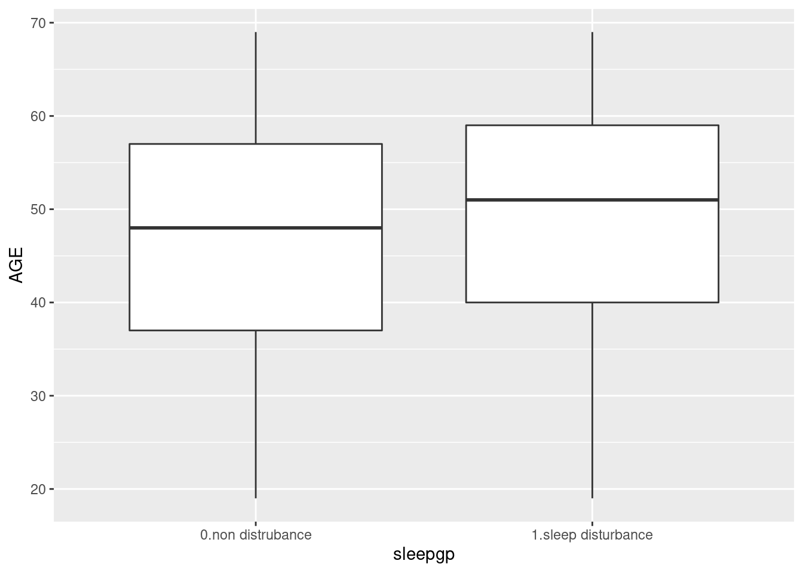
dat1 %>%
select(sleepgp, AGE) %>%
ggplot(aes(x=sleepgp, y= AGE)) +
geom_boxplot() +
ggtitle("Age according to sleep disturbance")+
xlab("Sleep Disturbance") +
theme(text=element_text(family="Times"))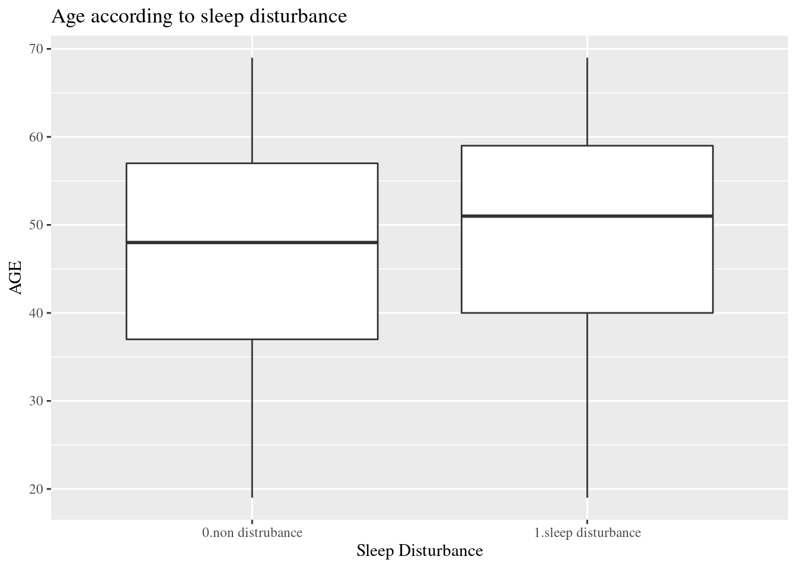
dat1 %>%
select(sleepgp, AGE) %>%
ggplot(aes(x=sleepgp, y= AGE)) +
geom_boxplot() +
ggtitle("Age according to sleep disturbance")+
xlab("Sleep Disturbance") +
annotate(
geom ="text", -Inf, Inf,
hjust=-3, vjust=5,
label =sprintf("P value: %s", ttestPvalue),
family = "Times"
) +
theme(text=element_text(family="Times")) 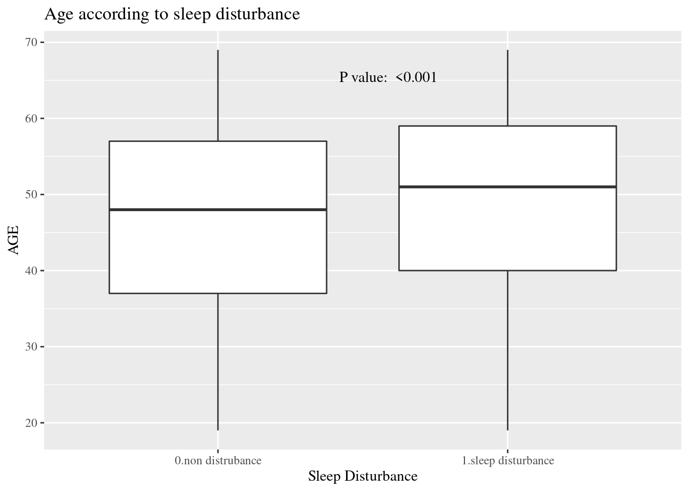
Chisq Test
wwa1gp is “A. kept worrying about work when you were not working”, and the response is 0.Never, 1.Rarely, 2.Sometimes, 3.Often and 4.Always. In the previous table, the distribution of sleep distrubance are differ according to wwa1gp.
The bar chart is one of the best option for distribution visualization.
dat1 %>%
group_by(wwa1gp) %>%
count(sleepgp) %>%
mutate(prob = n/sum(n)*100,
prob = round(prob, 1)) %>%
filter(sleepgp =="1.sleep disturbance") %>%
ggplot(aes(x=wwa1gp, y = prob)) +
geom_bar(stat="identity")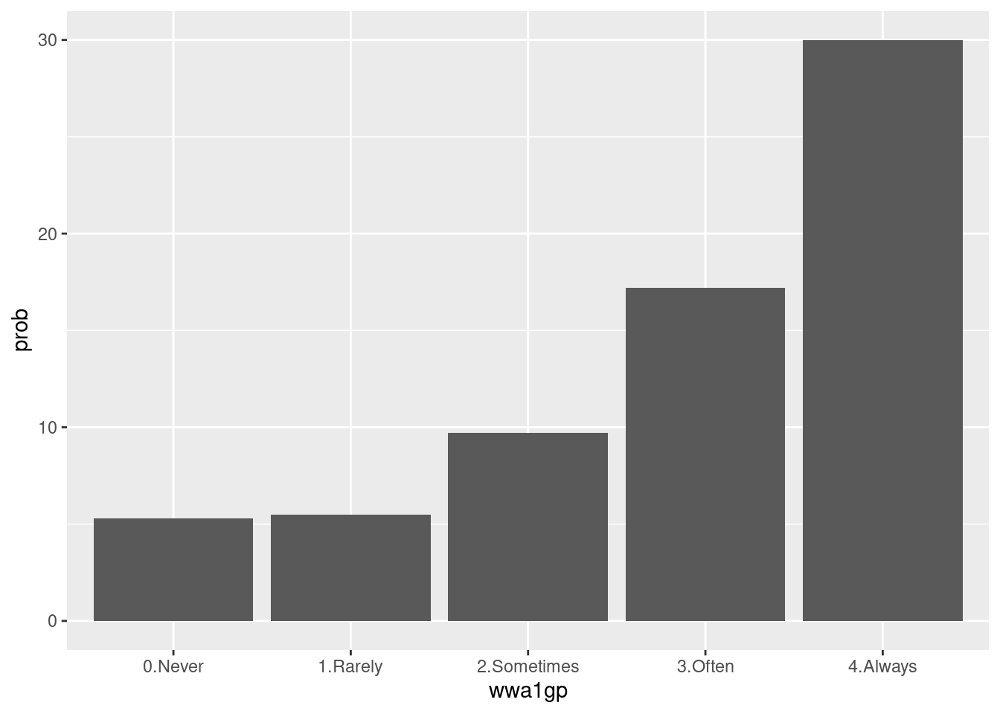
Some modification are needed to communicat to other researcher. Percent scale are easy to follow.
dat1 %>%
group_by(wwa1gp) %>%
count(sleepgp) %>%
mutate(prob = n/sum(n)*100,
prob = round(prob, 1)) %>%
filter(sleepgp =="1.sleep disturbance") %>%
ggplot(aes(x=wwa1gp, y = prob)) +
theme(text=element_text(family="Times New Roman", face="bold", size=12)) +
xlab("kept worrying about work when you were not working") +
ylab("Sleep Disturbance (proportion)") +
ylim(0, 0.35)+
geom_bar(stat="identity") +
geom_text(aes(label = sprintf("%s%%", prob)), vjust = -0.5) +
scale_y_continuous(labels = function(x) sprintf("%s%%", round(x)))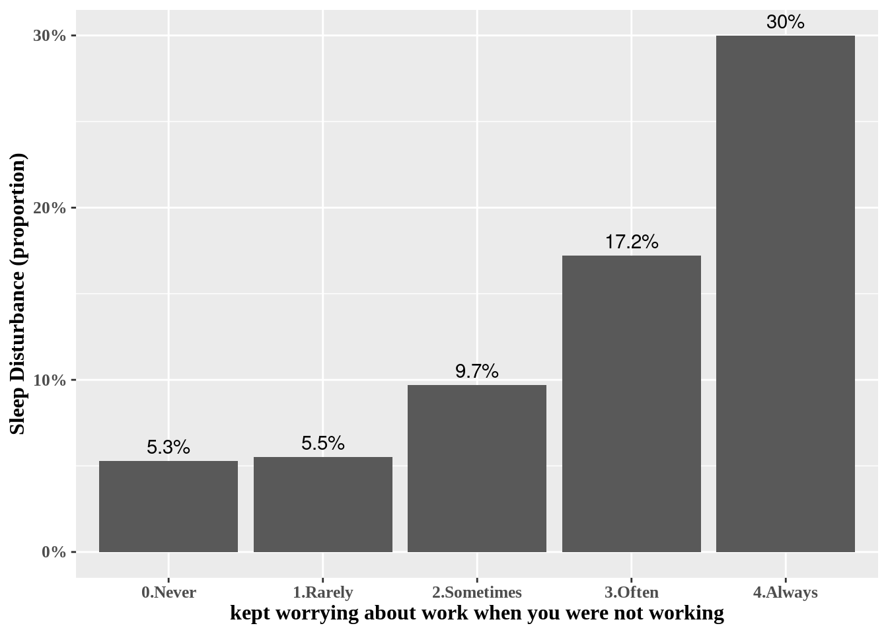
Now, we added the p value of chisq.test().
chisqp = dat1 %>%
select(wwa1gp, sleepgp) %>%
table() %>%
chisq.test()
if (chisqp$p.value <0.001){
pChisqV = "<0.001"
} else{
pChisqV = chisqp$p.value %>% sprintf("%.3f", .)
}
pChisqV## [1] "<0.001"#library(extrafont)
library(ggthemes)
dat1 %>%
group_by(wwa1gp) %>%
count(sleepgp) %>%
mutate(prob = n/sum(n)*100,
prob = round(prob, 1)) %>%
filter(sleepgp =="1.sleep disturbance") %>%
ggplot(aes(x=wwa1gp, y = prob)) +
xlab("kept worrying about work when you were not working") +
ylab("Sleep Disturbance (proportion)") +
geom_bar(stat="identity") +
geom_text(aes(label = sprintf("%s%%", prob)), vjust = -0.5) +
scale_y_continuous(labels = function(x) sprintf("%s%%", round(x))) +
annotate(
geom ="text", -Inf, Inf,
hjust=-0.5, vjust=8,
label =sprintf("P value: %s", pChisqV),
family = "Times New Roman",
fontface = "bold"
) +
theme_minimal() +
theme(text=element_text(family="Times New Roman", face="bold", size=12)) 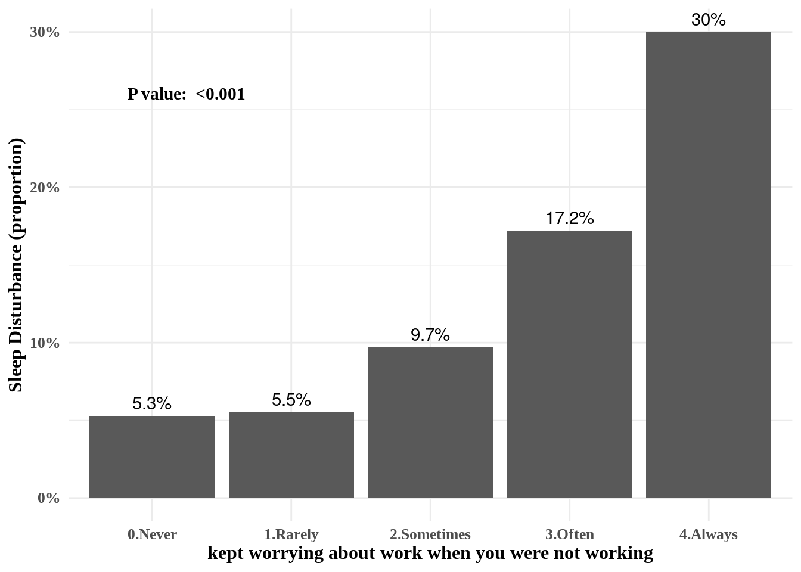
11.2 Odds ratio and 95% confidence interval
Logistic regression model
There are 3 kind of models, model II and III are include more confounding variables compare to model I.
mod1 = dat1 %>%
glm(data=.,family="binomial",formula = sleepgp == "1.sleep disturbance"
~ wwa1gp)
mod2 = dat1 %>%
glm(data=.,family="binomial",formula = sleepgp == "1.sleep disturbance"
~ wwa1gp + AGE + sexgp +satisfaction)
mod3 = dat1 %>%
glm(data=.,family="binomial",formula = sleepgp == "1.sleep disturbance"
~ wwa1gp + AGE + sexgp +satisfaction + shiftWork + njob)oddf0() function gives us odds ratio, lower limt and upper limit (95% confidence interval). We can draw OR (95% CI) plot, using errobar() function. we can also change the color using RGB triplet (ref: http://www.cookbook-r.com/Graphs/Colors_(ggplot2)).
oddf0(mod1) %>%
ggplot(aes(y=values, x = or)) +
theme_classic() +
geom_errorbarh(aes(xmin = ll, xmax = ul), height = 0.09, color = "#666666", size=0.5) +
geom_point(shape = 15, size = 2, color = "#444444") +
geom_vline(xintercept = 1, color = "#FF0000", linetype = "dashed", cex =0.5, alpha = 0.5) +
ylab("kept worrying about work when you were not working") +
xlab("Odds Ratio and 95% Confidence Interval of Sleep Dsturbance") +
theme(text = element_text(family ="Times"))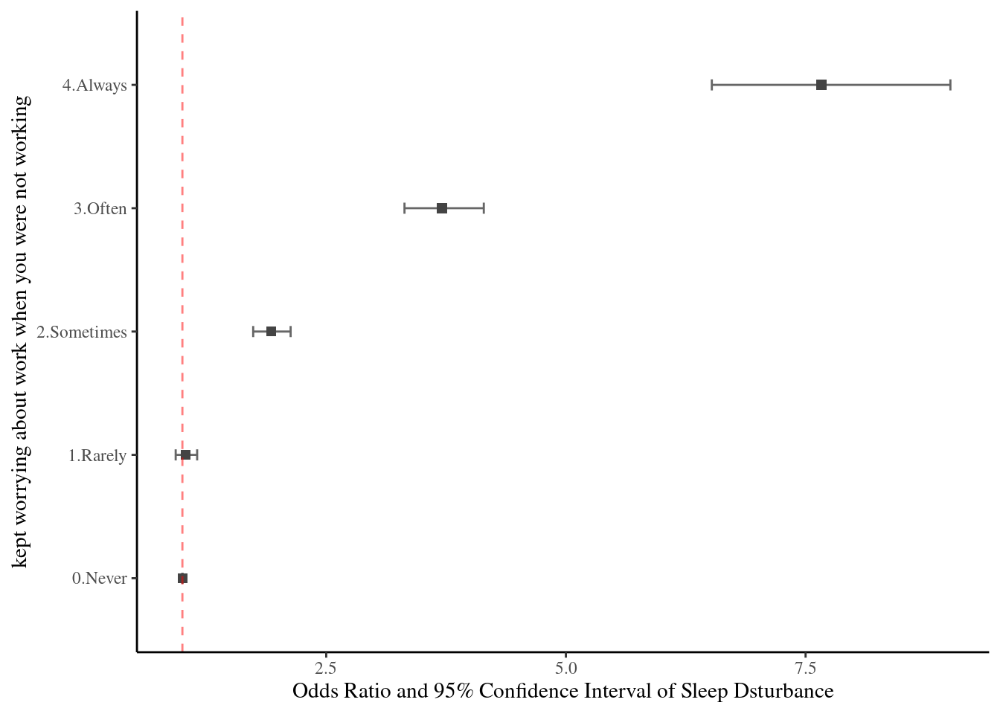
Vertical error bar also suitable to plot the OR (95% CI).
oddf0(mod1) %>%
ggplot(aes(x=values, y = or)) +
theme_classic() +
geom_errorbar(aes(ymin = ll, ymax = ul), width = 0.07, color = "#666666", size=0.5) +
geom_point(shape = 15, size = 2.5, color = "#444444") +
geom_hline(yintercept = 1, color = "#FF0000", linetype = "dashed", cex =0.5, alpha = 0.5) +
xlab("Kept worrying about work when you were not working") +
ylab("Odds Ratio and 95% Confidence Interval of Sleep Dsturbance") +
theme(text = element_text(family ="Times"))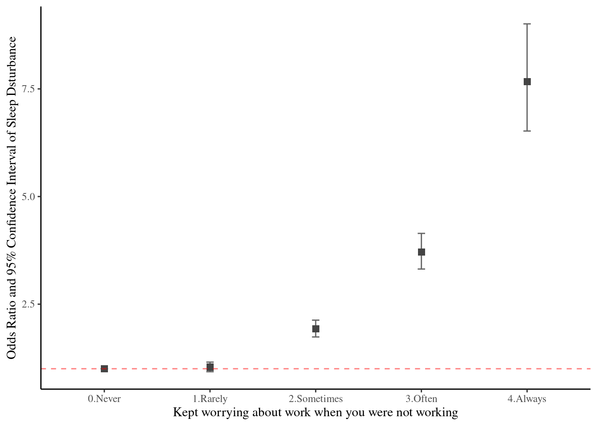
11.3 Multilevel and Labelled Data
11.3.1 introduction
In current data, We will used covid19 data from 16 countries. The group is country level and the interesting relationship is regarded on individual economic activity and psychological symptoms. In this chapter, we will discuss about how can visualization multi-level data (The original data are own to Laura, PH.D.)
if(!require("tidyverse")) install.packages("tidyverse")
if(!require("ggthemes")) install.packages("ggthemes")
if(!require("ggrepel")) install.packages("ggrepel")
if(!require("gridExtra")) install.packages("gridExtra")url <- "https://dspubs.org/webapps/forum/open_data/CovidJobLoss.rds"
download.file(url, "CovidJobLoss.rds")
mm3 = readRDS("data/CovidJobLoss.rds")
url2 <- "https://dspubs.org/webapps/forum/open_data/hdi.csv"
download.file(url2, "data/hdi.csv")
hdi = read_csv("data/hdi.csv")%>%
setNames(c('rank', 'country', 'y2019', 'country_1'))
url3 <- "https://dspubs.org/webapps/forum/open_data/covid_agu1.csv"
download.file(url3, "data/covid_agu1.csv")
agu1 <- read_csv('data/covid_agu1.csv')Data manipulation for creating and reshaping variables. We will exam the assoicaton between human development index and covid related outcomes.
mm4 <- mm3 %>%
mutate(agegp3 = ifelse(age <=40, '≤40', '>40')) %>%
mutate(agegp3 = factor(agegp3, levels=c('≤40', '>40'))) %>%
filter(Education %in% c(1:6)) %>%
mutate(edugp = ifelse(Education %in% c(1, 2), 1, # high school or less
ifelse(Education %in% c(3),2, # college
ifelse(Education %in% c(4), 3, 4)))) %>% # university (5, 6) Graduate school
mutate(edugp2 = ifelse(Education %in% c(1, 2, 3), 1, 2)) %>%
mutate(EcLossAllgp = ifelse(EcLossAll ==0, 0, 1)) #%>%
mm4.0 = mm4 %>% # hid: human development index for each countries
left_join(hdi %>% filter(!is.na(country_1)) %>%
rename(country_source = country,
country=country_1 ), by = c('country')) %>%
mutate(y2019 = ifelse(country_c =='South Korea', 0.916, y2019))11.3.2 Data analysis start
11.3.2.1 job loss due to COVID19, psychological aggravation according to Gender
Explore data using basic static for job loss prevalence across country and genders. the pyschological aggravation due to covid-19 are also plotted according to same logic.
fig1 <- mm4 %>%
group_by(country_c, gender) %>%
count(EcLossAllgp) %>%
mutate(prob = n/sum(n)) %>%
filter(EcLossAllgp == 1 ) %>%
ggplot(aes(x = gender, y = prob, fill = gender)) +
geom_bar(stat = "identity")+
xlab("")+
ylab("Job loss due to COVID19")+
scale_y_continuous(labels = function(x) paste0(x*100, "%"))+
facet_wrap(country_c ~., nrow = 3) +
theme_minimal()+
theme(text = element_text(size=17))+
theme(legend.position = c(.92, .1))
fig2 <- mm4 %>%
group_by(country_c, gender) %>%
count(TotalDepAnx) %>%
mutate(prob = n/sum(n)) %>%
filter(TotalDepAnx == 1 ) %>%
ggplot(aes(x = gender, y = prob, fill = gender)) +
geom_bar(stat = "identity")+
ylab("Psychological aggravation due to COVID19")+
xlab('Gender')+
scale_y_continuous(labels = function(x) paste0(x*100, "%"))+
facet_wrap(country_c ~., nrow = 3) +
theme_minimal()+
theme(text = element_text(size=17))+
theme(legend.position = c(.92, .1))Save total figure of fig1 and fig2. arrageGrob make two figures into the one figure.
ggsave(arrangeGrob(fig1, fig2, ncol = 1), file ='results/covid/figtotal.png', dpi = 300, width = 10, height =14)
ggsave(arrangeGrob(fig1, fig2, ncol = 1), file ='results/covid/tiff/figtotal.tiff', dpi = 300, width = 10, height =14)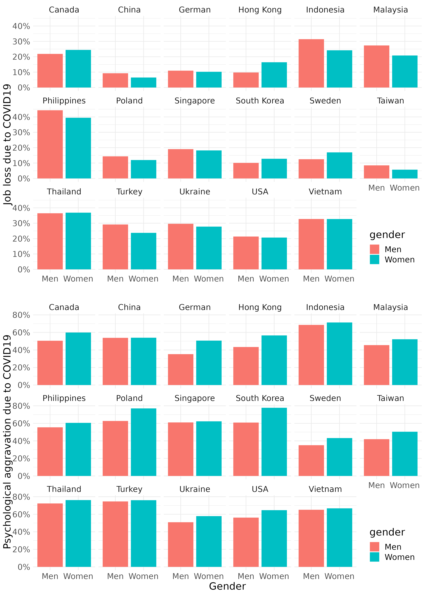
11.3.2.2 job loss, psychological aggravation according to age group
fig3 <- mm4.0 %>%
#filter(!country %in% c(16, 173)) %>%
group_by(country_c, gender, agegp2) %>%
count(EcLossAllgp) %>%
mutate(prob = n/sum(n)) %>%
filter(EcLossAllgp == 1) %>%
ggplot(aes(x = agegp2, y = prob, color = gender)) +
geom_point(aes(size = n), alpha = 0.2, show.legend = FALSE) +
geom_smooth(method = 'loess', span =0.9, se=FALSE) +
ylab("Job loss due to COVID19")+
scale_y_continuous(labels = function(x) paste0(x*100, "%"))+
theme_minimal() +
xlab("")+
labs(color = "Gender") +
facet_wrap(country_c~., nrow =3)+
theme(legend.position = c(.92, .1))+
theme(text = element_text(size=17))+
scale_x_continuous(breaks = c(2,4,6,8), labels = c(30,40,50,60))
fig4 <- mm4.0 %>%
#filter(!country %in% c(16, 173)) %>%
group_by(country_c, gender, agegp2) %>%
count(TotalDepAnx) %>%
mutate(prob = n/sum(n)) %>%
filter(TotalDepAnx == 1) %>%
ggplot(aes(x = agegp2, y = prob, color = gender)) +
geom_point(aes(size = n), alpha = 0.2, show.legend = FALSE) +
geom_smooth(method = 'loess', span =0.9, se=FALSE) +
ylab("Psychological aggravation due to COVID19")+
scale_y_continuous(labels = function(x) paste0(x*100, "%"))+
theme_minimal() +
xlab("Age (size = number of respondents)") +
labs(color = "Gender") +
facet_wrap(country_c~., nrow =3)+
theme(legend.position = c(.92, .1))+
theme(text = element_text(size=17))+
scale_x_continuous(breaks = c (2,4,6,8), labels = c(30,40,50,60))save figures
#figtotal2 <- grid.arrange(fig3, fig4, ncol = 1)
ggsave(arrangeGrob(fig3, fig4, ncol = 1), file ='results/covid/figtotal2.png', dpi = 300, width = 10, height =14)
ggsave(arrangeGrob(fig3, fig4, ncol = 1), file ='results/covid/tiff/figtotal2.tiff', dpi = 300, width = 10, height =14)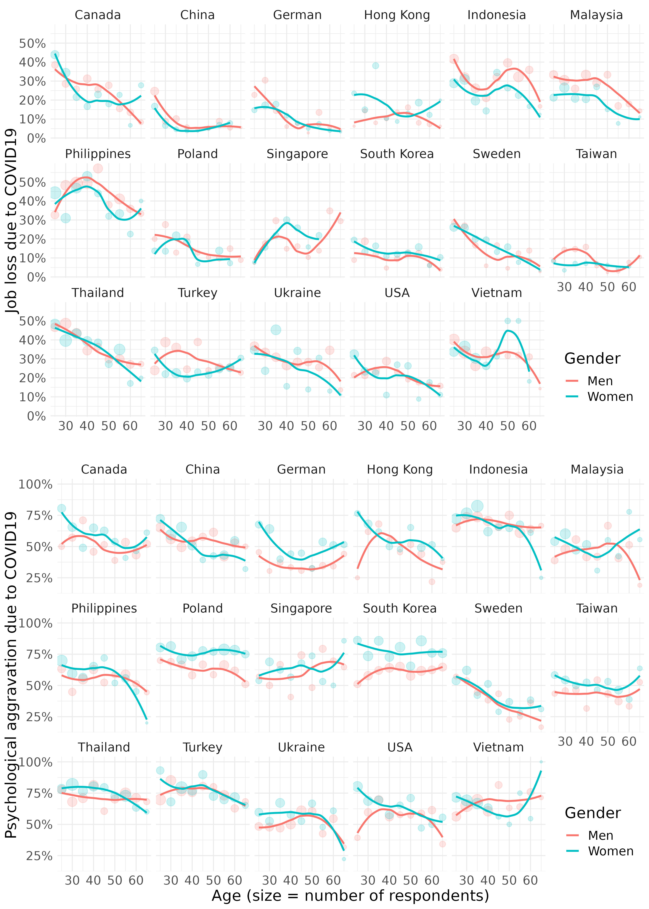
11.3.3 job loss, psychological aggravation according to Education level
Quzi 1
Let’s fill the { num } to draw following figure.
fig5 <- mm4.0 %>%
group_by(edugp, country_c, gender) %>%
count(EcLossAllgp ) %>%
mutate(prob = n/sum(n)) %>%
filter(EcLossAllgp == 1) %>%
ggplot(aes(x = {1} , y ={2} , color = {2})) +
geom_smooth(method = {3}, span =0.9, se = FALSE) +
scale_x_continuous(labels=c("1" = "≤H", "2" = "C",
"3" = "U", "4" = "G")) +
theme_minimal() +
labs(color = {4}) +
ylab("Job Loss due to COVID19") +
xlab("")+
facet_wrap({5})+
theme(text = element_text(size=17))+
theme(legend.position = c(.92, .1))
# mm4 %>%
# count(TotalDepAnx)
fig6 <- mm4.0 %>%
group_by(edugp, country_c, gender) %>%
count(TotalDepAnx ) %>%
mutate(prob = n/sum(n)) %>%
filter(TotalDepAnx == 1 ) %>%
ggplot(aes({6})) +
geom_smooth({7}) +
scale_x_continuous({8}) +
theme_minimal() +
ylab("Psychological aggravation due to COVID19") +
scale_y_continuous(labels = {9})+
xlab("H = high school, C = college, U = university, G = graduate ") +
labs(color = "Gender") +
facet_wrap({10})+
theme(text = element_text(size=17))+
theme(legend.position = c(.92, .1))save figure
#figtotal3 <- grid.arrange(fig5, fig6, ncol = 1)
ggsave(arrangeGrob(fig5, fig6, ncol = 1), file ='results/covid/figtotal3.png', dpi = 300, width = 10, height =14)
ggsave(arrangeGrob(fig5, fig6, ncol = 1), file ='results/covid/tiff/figtotal3.tiff', dpi = 300, width = 10, height =14)knitr::include_graphics('results/covid/figtotal3.png')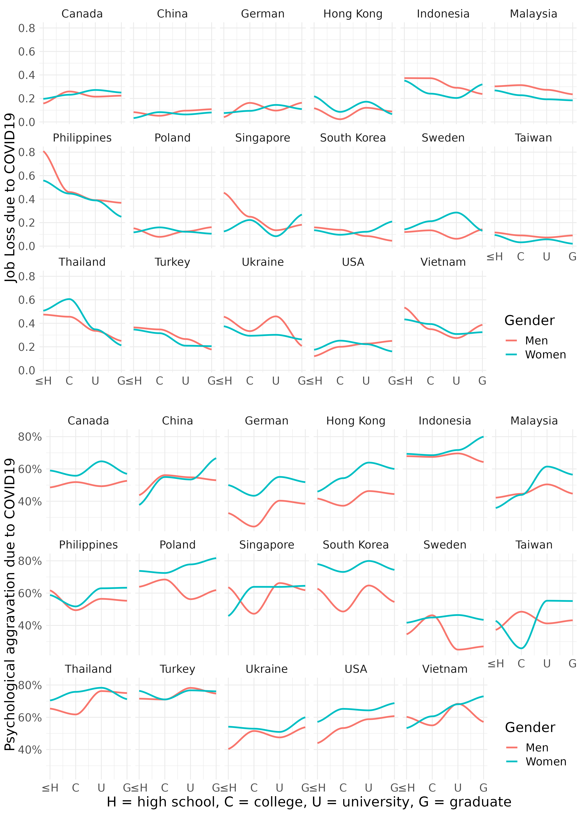
11.3.4 Visulization with human develop index stratification
Labelled data visualization need the code of `geom_label_repel’
agu1 <- read_csv('data/covid/covid_agu1.csv')
lab_mm <- mm4.0 %>%
left_join(agu1, by = 'country_c') %>%
mutate(inc_aug = c_case_agu1 / population *100000,
dth_aug = c_death_agu1/ population *100000) %>%
group_by(country_c, gender) %>%
summarize(hdi = mean(y2019),
Psycho = mean(TotalDepAnx ==1),
ecl = mean(EcLossAll !=0),
inc = mean(inc_aug))
lab_mm%>%
ggplot(aes(x = hdi, y = ecl, color = inc)) +
geom_point() +
theme_classic()+
xlab("Human Devlopment Index") +
#ylab("prevalance of Psychological Symptoms") +
ylab("prevalance of Economic Loss due to COVID19") +
#ylim(c(-0.1, 1)) + #xlim(c(2, 4)) +
geom_label_repel(aes(label = country_c),
fill = NA, # 투명하게 해서 겹쳐도 보이게
alpha =1, size = 3, # 작게
box.padding = 0.4, # 분별해서
segment.size =0.1, # 선
force = 2) + # 이것은 무엇일까요?
theme_minimal() +
geom_smooth(method = 'lm', formula = y ~ poly(x,2), se=FALSE) +
#geom_smooth( se=FALSE) +
facet_wrap(gender~.) +
guides(color = "none")
Quiz 2,
The Education level may affect the relationship between hdi and economic loss status. please draw following plot, and find the most vulnerable population.
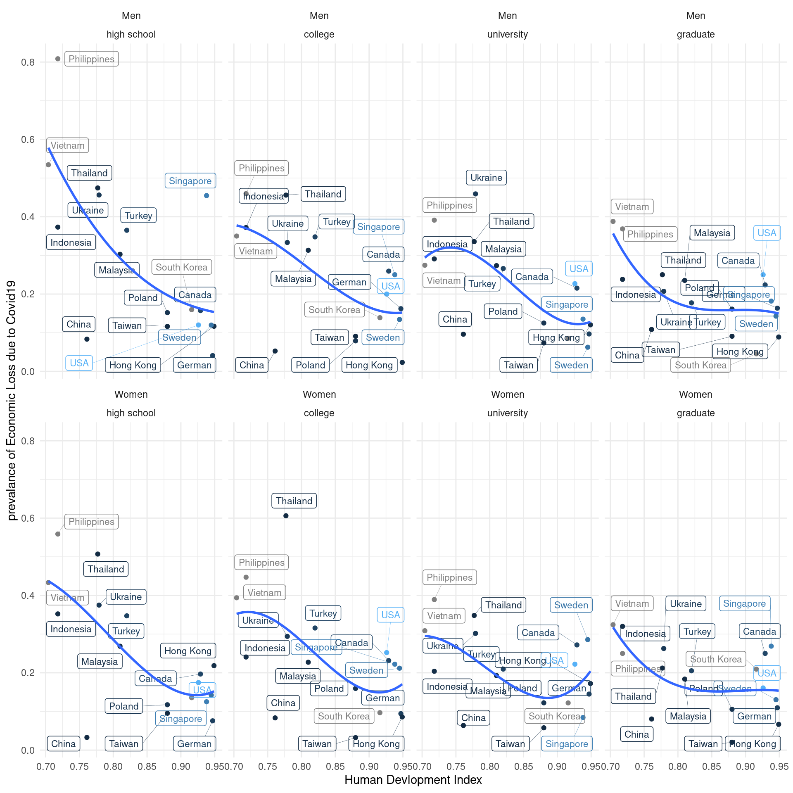